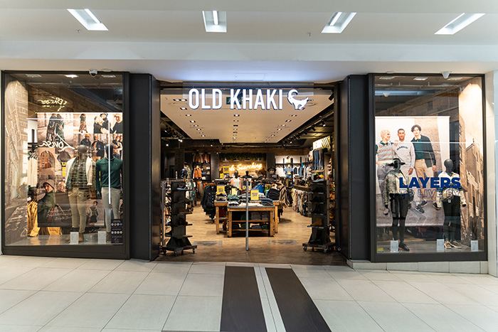
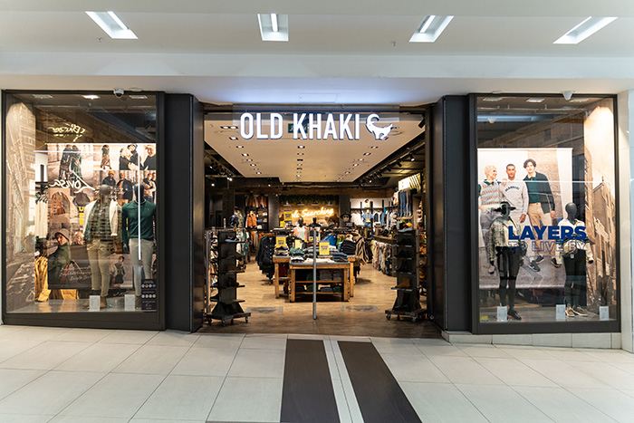

About us: Embrace effortless style with Old Khaki, where laid-back fashion meets quality craftsmanship. Offering a range of casual wear, from comfortable t-shirts and jeans to stylish jackets, knitwear, and accessories, Old Khaki is perfect for those who love a relaxed yet refined look. Designed for everyday living and spontaneous adventures, their clothing combines classic design with a rugged twist, ensuring you look good and feel great no matter the occasion.
Working Hours:
Old Khaki is known for its high-quality materials and timeless pieces that effortlessly blend style with functionality. Whether you're exploring the city, relaxing at the beach, or enjoying the great outdoors, their versatile collections offer a perfect fit for a variety of lifestyles. Friendly staff are always on hand to help you find the perfect outfit to suit your laid-back style.